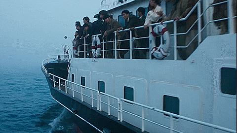

PROLOGUE
우리는 이 기사를 통해 1940년대 군함도에서 강제징용된 조선인들이 어떻게 끌려왔는지, 어떤 생활을 하였는지 그리고 그 끝은 어떠했는지를 보여주려 합니다.
기사는 직접 창작된 소설의 진행 장면과 함께, 각 장면들에 대한 진위여부를 파악하며 진행됩니다.
이 기사를 통해 격변하는 한국근대사 속 군함도의 조선인이 겪은 참혹한 현실에 대해 알아보는 기회가 되었으면 합니다.
이 소설은 군함도에서 실제 벌어진 사례들과 한수산 장편소설 『군함도』, 류승완 감독의 영화 『군함도』를 바탕으로 창작된 것임을 밝힙니다.
또한 배경 자료로 영화 『군함도』의 클립을 활용하였습니다.